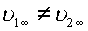
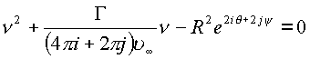
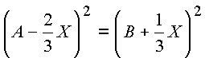
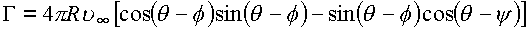

|
В. И. ЕЛИСЕЕВ ВВЕДЕНИЕ В МЕТОДЫ ТЕОРИИ
ФУНКЦИЙ ПРОСТРАНСТВЕННОГО КОМПЛЕКСНОГО ПЕРЕМЕННОГО |
|
2.2. Методика классического решения в пространстве
Математическая модель пространства
(Y) стыкуется с идеальной схемой несущей линии Прандтля. Несущая линия может быть интерпретирована как выколотая ось в пространстве (Y), содержащая делители нуля, которые по своей математической природе являются причинами вихреисточника.Кроме того, выколотая ось заключает в себе изолированное направление и тем самым удовлетворяет двум теоремам Гельмгольца.
Пелена от свободных вихрей может быть поверхностью вихрей с пространственной циркуляцией.
В комплексном пространстве тело конечных размеров заключим внутри поверхности s , заданной сеткой интегральных кривых
, .На элемент поверхности
ds действует векторная сила, направленная внутрь поверхности, поэтому согласно, формуле (2.1.) получимСкорость потока в точках x поверхности s будет направлена по касательной к поверхности s
,
где f
, y - аргументы точки x .Отсюда величина скорости равна (рис. 29)
и двойной интеграл по поверхности будет определять давление на всю конечную область пространства, ограниченную этой поверхностью,
где
.Сопряженность комплексных величин в пространстве рассматриваем относительно обоих направлений
i и j.На основании интеграла формула справедлива для любого вида поверхности, охватывающей тело конечных
размеров. Поэтому рассматриваем элементарную сеткуr = const, f = const.
с периодами
2p по обоим аргументам f , y .Вектор, комплексно-сопряженный вектору подъемной силы, выразится
(2.2.) |
Это и будет классическая формула А.С. Чаплыгина в пространстве для подъемной силы, действующей на тело, охватываемое произвольно замкнутой поверхностью.
В пространстве
(Y) воспользуемся функцией Жуковского, реализующей однолистное отображение сферы на внутренность круга с двойной границей (рис. 38).Рис. 38. Обтекание сферы пространственным потоком, вызывающее на ее поверхности циклонный вихрь. Траектории частиц циклонного вихря отвечают простейшей пространственной кривой
Таким образом, используется модель конечных размеров, интегрирование проводится по замкнутой поверхности, а не по контуру, как это делается в
z-плоскости.Комплексный потенциал можно построить, используя и особо простые профиля Жуковского (рис. 38
).В (
z) -плоскости использовались контурный интеграл,
и основанная на нем теорема о вычетах
,
поэтому из лорановского разложения скорости в окрестности изолированной бесконечно удаленной точки
.
вклад в решение вносят только два первых члена (взятые в фигурные скобки).
Для плоских контуров в пространстве (
Y) справедлив интеграл Коши в форме (1.52), применение которой не изменяет вида формулы Жуковского.
Однако следует иметь ввиду, что циркуляция здесь пространственная по контуру С
3, охватывающему тело конечных размеров. Скорость пространственно-комплекснаяВ зависимости от выбора исходных углов атаки y и q сферы пространственным потоком и их знаков получим различные выражения комплексного потенциала. Однако остановимся на варианте исследований, которые содержат в себе частный случай плоского варианта.
Считаем поток, идущий из бесконечности,
.Тогда из формулы Жуковского получим потенциал, описывающий бесциркуляционное обтекание сферы
Накладывая на него чисто циркуляционный поток
, равный в пространствеполучим окончательное решение задачи по определению потенциала потока в пространстве
(2.3.) |
Скорость потока для этого потенциала выражается сопряженной скоростью
в которой углы атаки,
q - действительные величины.Случай, когда скорость будет выражаться суммой двух потоков, пока не рассматривается
, , .
Исследуем решение по двум вариантам определения критических точек в пространственном обтекании сферы сплошным потоком.
Первый вариант соответствует классическому решению — критические точки потока там, где скорость потока равна нулю
.
Для этого варианта получаем уравнение.
,
решая которое, получаем выражение для отыскания критических точек потока
,
Видно, что расположение критических точек зависит от величины циркуляции Г. Рассмотрим случай, когда величина циркуляции равна
(корень в числителе обращается в нуль).
В этом случае величина циркуляции находится в плоскости, в которую отображается сфера (рис. 36). Главный вектор циркуляции будет равен Г и наклонен под углом
к действительной оси.Критические скорости располагаются на сфере. Рассмотрим этот случай более подробно.
Полагая на сфере
, определим модуль производной комплексного потенциалаПроизведем преобразование фигурных скобках
Для сокращения записи введем обозначения:
;
.
Преобразуем величину, содержащую циркуляцию
,
где
.
С учетом введенных обозначений, производная примет вид
.
Определим модуль выражения
.
Приравняем величину, стоящую под корнем нулю и получим циркуляцию
В результате величина циркуляции выразится
 .
.
Формула инвариантна относительно осей координат. При переходе к плоскости z получим в обоих случаях решение Н.Е. Жуковского:
при
;
при
(в обоих случаях взят знак минус квадратного корня).
При положительном знаке квадратного корня имеем величину, которая превышает классический плоский вариант:
;
.
Второй вариант связан с наличием в пространстве изолированной оси, которая может трактоваться как вихревой шнур естественной циркуляции. Дискретные точки делителей нуля по своей природе имитируют в пространстве наличие крутящего момента, что и определяет третье условие для определения критических точек потока. Первые два условия:
,
реализованы как в плоскости комплексного переменного, так и в пространстве
.
В этом случае делители нуля можно трактовать как причины вихреисточника. Согласно свойствам этих элементов и их геометрической иллюстрации при обтекании пространственного тела сплошной средой возникают на некоторых линиях такие условия обтекания, когда скорость разлагается на два взаимно перпендикулярных вектора, не имевших векторной суммы и приложенных к разным точкам, расположенным в окрестности точек той линии, на которой эти условия возникают. Образовавшееся плечо приводит к образованию крутящего момента в точке. Каждая среда имеет свою критическую скорость и свой радиус вы колотой оси.
Равенство производной от комплексного потенциала делителям нуля отвечает нахождению в решении критических линий потока. В этом коренное отличие решения в пространстве.
Таким образом, комплексный потенциал с учетом принятых обозначений
равен делителям нуля при выполнении условия
,
так как, если комплекс
имеет , то его модуль равен корню из нуля, а аргумент соответственно;
.
Раскроем выражение
и получим.
Подставим обозначения А,
ВВыражение для циркуляции принимает вид
.
Выражение содержит частные случаи плоскопараллельного обтекания:
при
,;
при
Решение содержит классические решения как частный случай.
Потенциал потока в пространстве (2.4.) в виде (2.3.) дает скорость
,
где
Квадрат
скорости даетВ соответствии с формулой (2.2.) и теорией о вычетах в этом выражении используется два
И величина подъемной силы будет выражена как
Формула значительно отличается от формулы Жуковского
Однако ни формула Н.Е. Жуковского,
ни выведенные формулы не претендуют на окончательное решение, а демонстрируют рабочий аппарат для введения многообразных факторов, участвующих в процессе обтекания.Представленное решение показало, что математические объекты - делители нуля, получили свое гидродинамическое толкование как источники вихря. Кроме того, выражение циклической постоянной, выбранное в главе 1, равное
.
соответствует физическому смыслу, ибо в противном случае при переходе к частным случаям из пространства к плоскости выражения не имели бы прежнего вида. Определение простейшей кривой С в пространстве также оправдано.
Проведенные решения показывают, что методика Н.Е. Жуковского реализуется в пространстве любого числа измерений. Введение новой размерности пространства уточняет решение и является методом введения структурных взаимодействий в этом сложном процессе, таким, например, как взаимодействие поверхностного слоя с потоком и с поверхностью тела.
В этом случае надо также учитывать, что контурные интегралы дают круг решений в дозвуковой области, а если применять объемный интеграл Коши
и теорему о вычетах в форме
,
то происходит переход в область газовой динамики
. Зависимость скорости потока и плотности вводится интегралом Бернулли. Все это путь к исследованию структурных взаимодействий.Мини оглавление:
[0], [1.1.1, 1.1.2, 1.1.3, 1.1.4, 1.1.5, 1.1.6, 1.1.7, 1.1.8, 1.2, 1.2.1, 1.2.2, 1.2.2.a, 1.2.2.b, 1.2.2.c, 1.2.2.d, 1.2.2.e, 1.2.2.f, 1.2.2.g, 1.2.2.h, 1.2.3, 1.3.1, 1.3.2, 1.3.3, 1.3.4, 1.3.5, 1.3.6, 1.4.1, 1.4.2, 1.5, 1.6, 1.7.1, 1.7.2, 1.7.3.1, 1.7.3.2, 1.7.3.3, 1.7.4.1, 1.7.4.2, 1.8.1], [2.1, 2.2],[3.1, 3.2, 3.3, 3.4.1, 3.4.2, 3.4.3, 3.4.4, 3.4.5],[4.1, 4.2, 4.3, 4.4],[5.1, 5.1.Рис.52, 5.2, 5.3, 5.4, 5.4.Т1, 5.4.Т2, 5.4.Т3, 5.5.1, 5.5.2, 5.5.3, 5.5.4],[6.1.1, 6.1.2, 6.2.1, 6.2.2, 6.2.3, 6.2.4, 6.2.5, 6.3, 6.4.1, 6.4.2, 6.5.1, 6.5.2],[7.1, 7.2, 7.3, 7.4, 7.5, 7.6, 7.7.1, 7.7.2, 7.8.1, 7.8.2, 7.8.3, 7.9],[8.1, 8.2.1, 8.2.2, 8.3, 8.4, 8.5, 8.6, 8.6.T1, 8.7, 8.8.1, 8.8.2, 8.8.3, 8.9.1, 8.9.2, 8.9.3, 8.10, 8.10.T2, 8.10.T3],[9.1, 9.2, 9.3, Рис.88, 89, 90, 91, 92, 93, 94, 95, 96, 97, 98, 99, 100],[10.1, 10.2, 10.3, 10.4, 10.5, 10.6, 10.7, 10.8, 10.9, 10.10, 10.11, 10.12, 10.13, 10.14, 10.15.1, 10.15.2, 10.16.1, 10.16.2, 10.17, 10.18],[11]
Размещенный материал является электронной версией книги: © В.И.Елисеев, "Введение в методы теории функций пространственного комплексного переменного", изданной Центром научно-технического творчества молодежи Алгоритм. - М.:, НИАТ. - 1990. Шифр Д7-90/83308. в каталоге Государственной публичной научно-технической библиотеки. Сайт действует с 10 августа 1998.
E-mail: mathsru@gmail.com